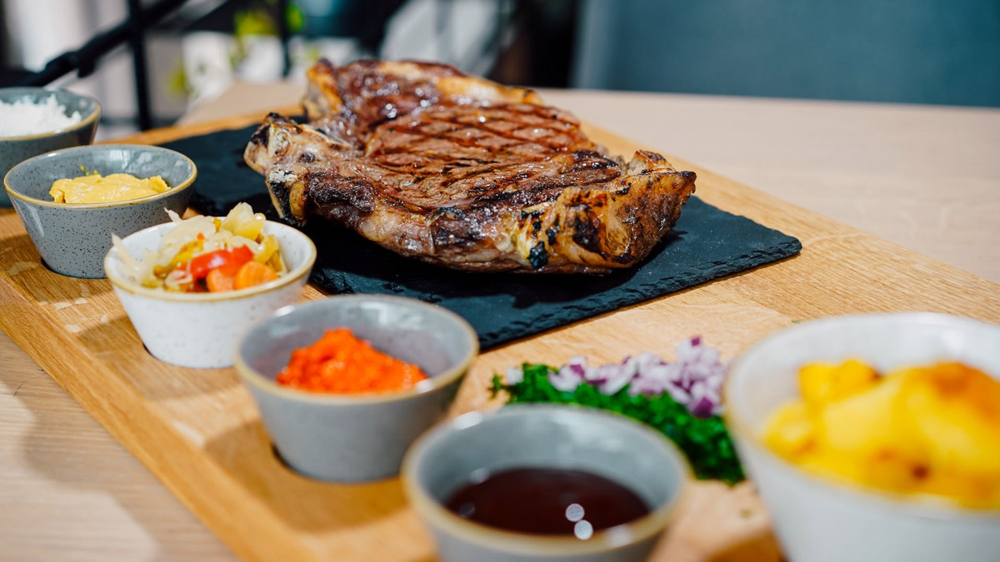

Tradicionalna jela na moderan način
Riba i plodovi mora, meso s žara, domaće tjestenine i vina zadarskog kraja. Za rezervaciju nazovite 023 213 445.
Hladna predjela
za dvije osobe
za dvije osobe
Juhe
Topla predjela

Salate
Hladno-tople salate
Tuna na žaru na podlozi od rikole i cherry rajčice, čips od grana padana
Pileći file na žaru, panceta, iceberg salata, krutoni, umak od majoneze, grana padano
Trakice bifteka na žaru, rikula, tikvice, gljive, cherry rajčica, grana padano sir
Tjestenine
Meso
Steak od junećeg filea na žaru, pečeni krumpir
Biftek, pureći file, svinjski file, povrće na žaru, prženi krumpir
Medaljoni od purećih prsa, umak od gorgonzole, njoki

Riblji specijaliteti
Uz blitvu na dalmatinski
File bijele ribe, povrće
Blitva na dalmatinski
Tuna, blitva na dalmatinski, krema od maslinovog ulja
Tuna, grdobina u panceti, file od brancina, cherry rajčica, krema od peršina, blitva na dalmatinski
Blitva na dalmatinski, krema od maslinovog ulja
Škampi, umak od rajčice, palenta
Bijela riba, lignje, škampi, tuna, sabljarka, školjke, blitva na dalmatinski
Pržene lignje s pomfritom
Grdobina, hobotnica, škamp, sipa, palenta
Dječji jelovnik
Umak od mljevenog mesa
Prženi krumpirići

Kokteli
Prosecco, sirup od bazge, mineralna voda
Aperol, pjenušavo vino, mineralna voda
Gin Botanist, sok od limete, suhi šipak, aromatic tonic
Gin Botanist, sok od limete, suhi šipak, citrus tonic, svježa menta
Liker od naranče, sok od limete, mineralna voda
Bulldog gin, Campari, slatki vermut
Bijela vina
Vina zadarskog područja
Italija · 0,75 l
Korčula · 0,75 l
Zadar · 0,75 l
Daruvar · 0,75 l
Nadin, Zadar · 0,75 l
Otok Krk · 0,75 l
Nadin, Zadar · 0,75 l
Istra · 0,75 l
Zadar · 0,75 l
Petrčane, Zadar · 0,75 l
Slavonija · 0,75 l
Crna vina
Zadar · 0,75 l
Zadar · 0,75 l
Zadar · 0,75 l
Zadar · 0,75 l
Nadin, Zadar · 0,75 l
Zadar · 0,75 l
Cuvée merlot i syrah, Zadar · 0,75 l
Zadar · 0,75 l
Zadar · 0,75 l
Rosé
Zadar · 0,75 l
Zadar · 0,75 l
Desertna vina
Zadar · 0,75 l
Zadar · 0,5 l
Vino kuće
Zadar · 1 l
Cijene su izražene u eurima. Ponuda se može mijenjati – za aktualnu ponudu pitajte konobara.